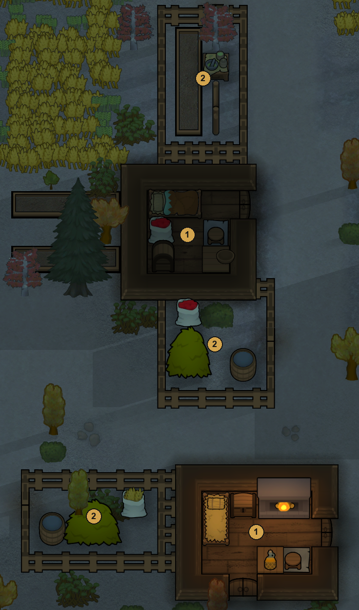
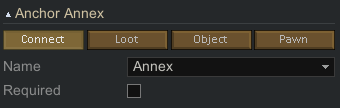
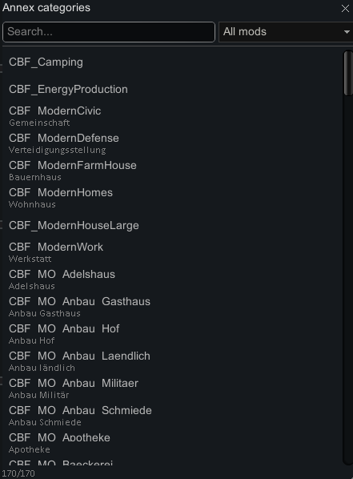
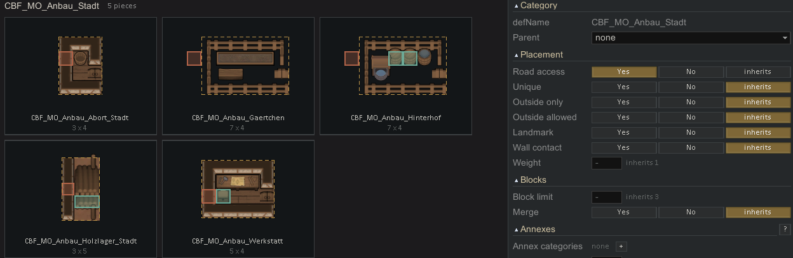

Annexes
Piece
Annexes extend a building with optional structures such as an inn stable, a farmhouse woodshed or a tavern yard. The generator attaches them at marked positions after placing the main buildings. Available space, category rules and selection chances determine which additions fit each house.

- Houses of a village.
- Annexes: a pen, a hay store and a woodshed, docked at different sides.
To use annexes you need three things: annex spots on the house, annex pieces in a category of their own, and a link from the house's category to that annex category. The sections below explain each.
How it works
- The generator places the buildings of a district (a group of buildings in one part of the town, see Settlements).
- Then it goes through the houses once more. For every house whose category names annex categories, it visits the house's annex anchors in random order.
- At each anchor it rolls Chance per anchor. On success it tries the annexes of the allowed categories in an order drawn by weight, and places the first one that fits.
- It stops when the house has At most annexes.
An annex belongs to the same district and ward (ring of the town) as its house. It is placed after all normal buildings, so it only takes space that is still free.
The anchor name
Both the house and the annex mark the docking spot with an anchor. An anchor is a marked area inside a piece, see Anchors. For annexes it is a Connect anchor with the name Annex, picked from the name menu of the anchor.

What the house needs
- A Connect anchor named Annex on its outer wall. Mark one cell per possible annex spot, on the wall cell itself. The cell outside it must not belong to the house.
- Its category, or a parent category, lists the Annex categories that may attach. See Categories. The + next to them opens a picker with search and mod filter.

What the annex needs
- A Connect anchor named Annex on the side that faces the house. There are two ways to set it:
- Shared wall: the anchor lies on a wall cell of the annex. The annex then uses the house wall as its own. Both cells must be walls.
- Touching only: the anchor lies one cell outside the annex's shape. The annex then stands right next to the house with its own wall.
- A category that a house names as annex category.
- An annex without a door of its own counts as open. It is entered from outside, like a shed or a pen.
An annex category with its pieces. The red Connect anchor either lies on the shared wall or one cell outside the shape:

Where an annex is not placed
- outside the ward of its house, or on ground that is already used: roads, other buildings, reserved space
- next to a door of the house
- next to a building other than its house
- against the town wall, except in the old town (the innermost ward)
- too close to the map edge
If no annex fits at an anchor, that anchor stays empty. The house is built in any case.
Settings
The settings are set in the Categories tab, section Annexes. Weight is in the section Placement of the category, or in Basics of the piece in the Piece tab.
| Setting | Where | Default | Effect |
|---|---|---|---|
| Annex categories | category of the house | none | Which annexes may attach. Empty takes the list of the parent category. |
| Chance per anchor | category of the house | 0.6 | Chance that an annex is tried at one anchor. |
| At most | category of the house | 2 | Annexes per house. |
| Repeatable | category of the annex | no | Allows the same annex more than once on one house. |
| Full wall | category of the annex | no | The annex only attaches where it covers the whole wall side of the house, end to end, for example a lean-to along the full length. |
| Overhang | category of the annex | 0 | With Full wall: how many cells the annex must reach past the house wall at each end. |
annexCornerPath (XML) |
category of the annex | false | Opens the two house-wall corner cells at the ends of the attachment as floor, for example for lean-to tents. |
| Weight | piece or category of the annex | 1 | Order among the annexes. Below 1 it is also the chance that the annex is tried at all. |
Tips
- Give a house several annex anchors on different sides. With the default of at most 2, the house then looks different from copy to copy.
- Keep annexes small, 3 to 8 cells a side. Large annexes rarely find room between the houses.
- Annex categories do not have to be ordered in a settlement plan. If a plan orders them anyway, they are also built as buildings of their own.